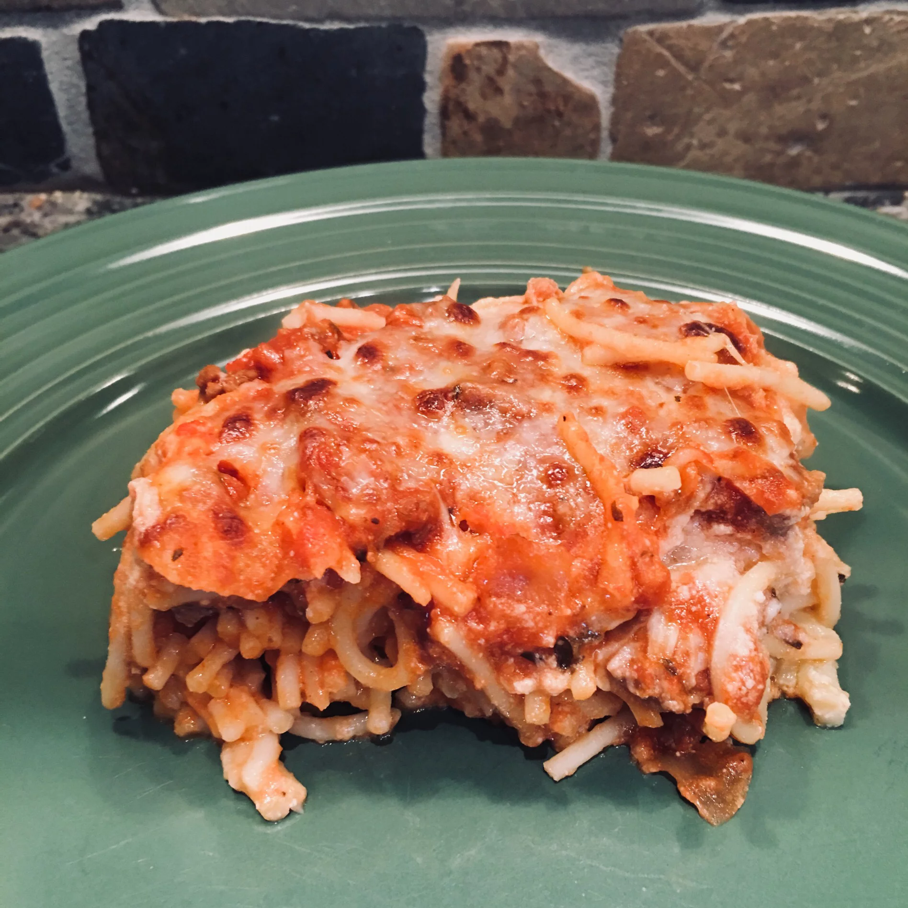

Spaghetti

A comforting baked spaghetti casserole with plenty of melted cheese is the perfect dish for potlucks, family gatherings, or a week-night dinner.
Ingredients
- 1 (16 ounce) package spaghetti
- 1 pound ground beef
- 1 onion, chopped
- 1 (32 ounce) jar meatless spaghetti sauce
- ½ teaspoon seasoned salt
- 2 eggs
- ⅓ cup grated Parmesan cheese
- 5 tablespoons butter, melted
- 2 cups small curd cottage cheese, divided
- 4 cups shredded mozzarella cheese, divided